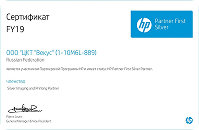
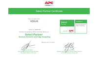
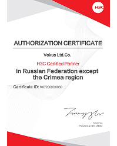

- История компании
- Подразделения
- Собственное производство
- Сервисы
- Лицензии и сертификаты
- Статусы
- Партнеры
- Рейтинги
Статусы
-

75 КбСертифицированный серебряный партнер HP

Является участником Партнерской Программы HP и имеет статус HP Partner First Silver Partner.Членство: Серебряный партнер по визуализации и печати.Подпись:Pierre Jover (Генеральный директор и Вице-Президент)
Посмотреть подробнее в рубрике производителя -

91.4 КбСертифицированный партнёр сетевых технологий и периферийных вычислений APC by Schneider Electric
Партнёр №0006893358 был признан компанией APC by Schneider Electric как выбранный партнёр сетевых технологий и периферийных вычислений.Подпись:Roman Shmakov (Вице-президент подразделения безопасной энергетики Schneider Electric по...
Посмотреть подробнее в рубрике производителя -

106.7 КбСертифицированный партнёр H3C
Авторизация Векус в H3C как сертифицированный партнер в Российской Федерации, за исключением Крымской области.Подпись:Tony Yu (Президент и генеральный директор H3C)
Посмотреть подробнее в рубрике производителя